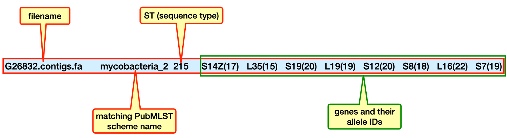
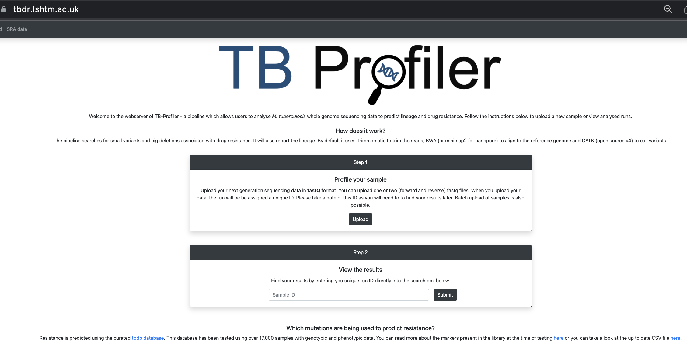

11.1 Bacterial Genotyping and Drug Resistance Prediction
Teaching: 120 min || Exercises: 30 min
Overview
Questions:
How do I perform basic genotyping and serotyping of bacterial strains?
What are the available genotyping and serotyping tools?
How do I identify resistant bacteria?
Learning Objectives:
To perform basic genotyping and serotyping of bacterial strains from WGS data.
To perform antimicrobial resistance (AMR) prediction of bacterial strains using WGS data.
Key points:
Basic bioinformatics tools exists to genotype as well as serotype bacterial strains from identifying species right down to determining lineages, sub-lineages and strains.
Using WGS data, and by just calling out drug resistant SNPs, you can readily determine the AMR pattern of bacterial strains.
Some widely used bacteria genotyping, serotyping and AST tools include:
Multi Locus Sequence Typing (MLST) — genotyping
Seroba — serotyping
TBprofiler — genotyping and AST
Ariba — genotyping and AST
11.1.1 Background
Whole genome sequencing data enables us to acquire several information relating to the:
genotype,
serotype and
prediction of antimicrobial resistance
… of our bacterial sample.
In this module of the workshop we will be introduced to the various tools that are widely used for obtaining the above information from our genome.
Let’s jump into business by looking at our first tool.
Multi-Locus Sequence Typing (MLST) typically refers to the systematic sequencing and typing of five to ten well-conserved (usually seven), house-keeping genes or loci within the bacterial genome. Allelic variation at each locus is catalogued, and a sequence type or lineage is assigned by comparing the set of alleles to other isolate profiles in one of several available databases. The majority of MLST databases are hosted at a web server currently located in Oxford University pubmlst.org.
You can read more about the practical steps involved in MLST in this publication.
Housekeeping genes are examples of regions in a genome that tend to be highly conserved and evolve slower than other genes mainly due to their roles in the maintenance of basic cellular functions and are essential for the existence of a cell. They are expressed in all cells of an organism under normal and patho-physiological conditions.
It is worth noting that both the number and type of housekeeping genes interrogated by MLST may differ from species to species. MLST typing for Staphylococcus aureus for example uses seven housekeeping genes. As specified by the MLST website, these genes include:
carbamate kinase (arcC),
shikimate dehydrogenase (aroE),
glycerol kinase (glpF),
guanylate kinase (gmk),
phosphate acetyltransferase (pta),
triosephosphate isomerase (tpi) and
acetyl coenzyme A acetyltransferase (yqiL)
Whereas MLST typing for Vibrio vulnificus uses the following housekeeping genes:
glucose-6-phosphate isomerase (glp),
DNA gyrase, subunit B (gyrB),
malate-lactate dehydrogenase (mdh),
methionyl-tRNA synthetase (metG),
phosphoribosylaminoimidazole synthetase (purM),
threonine dehydrogenase (dtdS),
diaminopimelate decarboxylase (lysA),
transhydrogenase alpha subunit (pntA),
dihydroorotase (pyrC) and
tryptophanase (tnaA).
MLST compares allelic diversity based on approximately 450-500 bp internal gene fragments. For each house-keeping gene, the different sequences present within a bacterial species are assigned as distinct alleles and, for each isolate, the alleles at each of the seven (or specific number of loci) loci define the allelic profile or Sequence Type (ST). You should remember encountering ST from two of our exercises (Exercise 5.1.8) in our short read mapping and (Exercise 11. ) in our phylogenetics sessions, where we attempted to reproduce data results from the paper titled “Genomic analysis of ST88 community-acquired methicillin resistant Staphylococcus aureus in Ghana”. You can have a look at those exercises again if you haven’t done that already. Thousands of sequences have been submitted, generating numerous STs. Organisms that share all seven alleles are defined as clones, those that share five of seven identical alleles are defined as Clonal Complexes (CC), and those that share less than five alleles are defined as unrelated.
In MLST the number of nucleotide differences between alleles is ignored and sequences are given different allele numbers whether they differ at a single nucleotide site or at many sites. The rationale is that a single genetic event resulting in a new allele can occur by a point mutation (altering only a single nucleotide site), or by a recombinational replacement (that will often change multiple sites) - weighting according to the number of nucleotide differences between alleles would erroneously consider the allele to be more different than by treating the nucleotide changes as a single genetic event. The allelic profiles can be considered as a character set of n categorical characters (n being the number of house-keeping genes investigated). MLST has been used successfully to study population genetics and reconstruct micro-evolution of epidemic bacteria and other micro-organisms.
Conventional MLST
Conventionally, MLST has been performed on purified isolates by running sequencing analysis on PCR amplified house-keeping genes. In the past, this really cut the cost of whole genome sequencing (WGS) by just performing a targeted sequencing on the main house-keeping genes used for MLST as per the organism. The figure below adapted from Ruppitsch 2016 summarised this very well.
Conventional MLST - Scheme for multilocus sequence typing adapted from mlst.net. MLST uses sequence variations in up to seven housekeeping genes. Allele numbers are assigned to unique sequences and the allele number combination result in a sequence type.
With the growing decreasing cost of WGS, it is now even cheaper to perform WGS and then do in silico MLST analysis. This is what we will do in the workshop.
A typical MLST phylogeny
All the MLST allelic information generated from a population of microorganisms can be nicely plotted to study the variation using phylogenetic analysis. You should be an expert of plotting phylogenetic trees by now.
This is too much of introduction. Now let’s get to what we are here for. What bioinformatics tool can we apply to define STs from our genome?
Fortunately for us, there is a tool called mlst. What the *mlst tool does is to scan contig files against traditional PubMLST typing schemes.
Help
Do this to get the help information for mlst
mlst-h
SYNOPSIS
Automatic MLST calling from assembled contigs
USAGE
% mlst --list # list known schemes
% mlst [options] <contigs.{fasta,gbk,embl}[.gz] # auto-detect scheme
% mlst --scheme <scheme> <contigs.{fasta,gbk,embl}[.gz]> # force a scheme
GENERAL
--help This help
--version Print version and exit(default ON)
--check Just check dependencies and exit (default OFF)
--quiet Quiet - no stderr output (default OFF)
--threads [N] Number of BLAST threads (suggest GNU Parallel instead) (default '1')
--debug Verbose debug output to stderr (default OFF)
SCHEME
--scheme [X] Don't autodetect, force this scheme on all inputs (default '')
--list List available MLST scheme names (default OFF)
--longlist List allelles for all MLST schemes (default OFF)
--exclude [X] Ignore these schemes (comma sep. list) (default 'ecoli,abaumannii,vcholerae_2')
OUTPUT
--csv Output CSV instead of TSV (default OFF)
--json [X] Also write results to this file in JSON format (default '')
--label [X] Replace FILE with this name instead (default '')
--nopath Strip filename paths from FILE column (default OFF)
--novel [X] Save novel alleles to this FASTA file (default '')
--legacy Use old legacy output with allele header row (requires --scheme) (default OFF)
...
Usage
The general format of the command is:
mlst [options] <contigs.{fasta,gbk,embl}[.gz]>
Generally, the command above auto-detects an appropriate scheme to use. However, you can force a scheme by adding the option --scheme and specifying an appropriate scheme:
You can list known schemes with the below command:
mlst--list
The above command gives a shortened list. You can get more details using mlst --longlist.
As you can see from the general command above, you just simply give it a genome file in FASTA/GenBank/EMBL format, optionally compressed with gzip, zip or bzip2. You can also give it multiple files at once.
Output
The command returns a tab-separated line containing
the filename
the matching PubMLST scheme name
the ST (sequence type)
the genes and their allele IDs

mlst output
If you have tried out any of the above commands, you may have realised it gives you error messages. This is because you probably don’t have mlst installed on your system. We have created a conda environment called mlst. We will activate this environment to perform the tasks in this chapter of the workshop.
Navigate to the genotyping_and_dr directory and activate the mlst environment
cd ~/Desktop/workshop_files_Bact_Genomics_2023/11_genotyping_and_dr/
mamba activate mlst
Have a quick look at the directory
ls-al
We are now ready to perform some genotyping starting with mlst.
First, let’s try our hands on knowing what the ST of our genome is. Our first genome to analyse is G26832 and we will use the contigs.fa as our input.
Let’s go ahead and run the below command with no options to genotype our sample:
mlst — raw
mlst G26832.contigs.fa
[11:37:27] This is mlst 2.22.1 running on linux with Perl 5.032001
[11:37:27] Checking mlst dependencies:
[11:37:27] Found 'blastn' => /home/pa486/miniconda3/envs/mlst/bin/blastn
[11:37:27] Found 'any2fasta' => /home/pa486/miniconda3/envs/mlst/bin/any2fasta
[11:37:27] Found blastn: 2.13.0+ (002013)
[11:37:27] Excluding 3 schemes: vcholerae_2 ecoli abaumannii
[11:37:32] Found exact allele match mycobacteria_2.S7-19
[11:37:32] Found exact allele match mycobacteria_2.S12-20
[11:37:32] Found exact allele match mycobacteria_2.L19-19
[11:37:32] Found exact allele match mycobacteria_2.L35-15
[11:37:32] Found exact allele match mycobacteria_2.L16-22
[11:37:32] Found exact allele match mycobacteria_2.S8-18
[11:37:32] Found exact allele match mycobacteria_2.S19-20
[11:37:32] Found exact allele match mycobacteria_2.S14Z-17
G26832.contigs.fa mycobacteria_2 215 S14Z(17) L35(15) S19(20) L19(19) S12(20) S8(18) L16(22) S7(19)
[11:37:32] If you have problems, please file at https://github.com/tseemann/mlst/issues
[11:37:32] Done.
Are you happy with the output?
Let’s say you are, because at least you can scan through and identify the line that contains the information you need. Can you think of a way to just get the line of output you need.
Yes, you can pipe the output to a grep command. Let’s try our hands on this exercise and see if it works.
Exercise 11.1.2.1: Extracting informative line from mlst output
Using the mlst command above combined with any text finding command of your choice how will you obtain the expected output below.
You probably tried solving this by passing the output of mlst to grep using a | (pipe):
mlst G26832.contigs.fa |grep"G26832"
[12:40:24] This is mlst 2.22.1 running on linux with Perl 5.032001
[12:40:24] Checking mlst dependencies:
[12:40:24] Found 'blastn' => /home/pa486/miniconda3/envs/mlst/bin/blastn
[12:40:24] Found 'any2fasta' => /home/pa486/miniconda3/envs/mlst/bin/any2fasta
[12:40:24] Found blastn: 2.13.0+ (002013)
[12:40:24] Excluding 3 schemes: ecoli vcholerae_2 abaumannii
[12:40:27] Found exact allele match mycobacteria_2.S7-19
[12:40:27] Found exact allele match mycobacteria_2.S12-20
[12:40:27] Found exact allele match mycobacteria_2.L19-19
[12:40:27] Found exact allele match mycobacteria_2.L35-15
[12:40:27] Found exact allele match mycobacteria_2.L16-22
[12:40:27] Found exact allele match mycobacteria_2.S8-18
[12:40:27] Found exact allele match mycobacteria_2.S19-20
[12:40:27] Found exact allele match mycobacteria_2.S14Z-17
[12:40:27] Please also cite 'Jolley & Maiden 2010, BMC Bioinf, 11:595' if you use mlst.
[12:40:27] Done.
**G26832**.contigs.fa mycobacteria_2 215 S14Z(17) L35(15) S19(20) L19(19) S12(20) S8(18) L16(22) S7(19)
Aww, but you end up with the same output but with G26832 highlighted.
I guess we all failed the test. Yes, it does happen sometimes even when you are 100% sure that your command should give you an expected output.
Although we probably failed the test, let’s not worry, mlst has a special flag that we can use to get a quiet output by using the --quiet option.
The --quiet option is also used in many other programs.
You actually do not need to specify a --quiet option if the command is used in a pipeline as the output it actually passes on to the next command is just the line of interest.
You can check this by outputting our previous raw command to a text file:
mlst G26832.contigs.fa > G26832.mlst.txt
Now, view the text file
head G26832.mlst.txt
Let’s have a look at another option that helps you change the name of your sample in the output. This is very useful if your original sample name contains a name that you probably do not want to see in an excel file.
Using the --label option
We can assign a new name to each sample by applying the --label option and specifying the new preferred name right after the option:
Now we see how easy it is to genotype our sample using mlst. Let’s go ahead and type all the samples in our genotyping directory beginning with the letter G.
The easy way to do this is to use a wildcard to call all the contigs.fa samples beginning with G and run the mlst on each file.
Now let’s fit the mlst command somewhere in the for loop:
for contig in*RR*.contigs.fa;domlst--quiet--label${contig%.contigs.fa}$contig>> downloaded_genome_mlst.tsv;done
Till now, we have used the contigs.fa file. let’s try one pseudogenome .fasta file from our short_read_mapping directory and see if we get the same output as with what we did with the contigs.fa file.
Let’s first copy the file to our current working directory:
And now perform mlst (focus on only the last two lines of the output):
mlst--quiet G26832.fas G26832.contigs.fa
...
CFastaReader: Hyphens are invalid and will be ignored around line 70535
CFastaReader: Hyphens are invalid and will be ignored around line 70536
G26832.fas mycobacteria_2 215 S14Z(17) L35(15) S19(20) L19(19) S12(20) S8(18) L16(22) S7(19)
G26832.contigs.fa mycobacteria_2 215 S14Z(17) L35(15) S19(20) L19(19) S12(20) S8(18) L16(22) S7(19)
Viola, we had the same ST. mlst did a great job.
Using mlst without auto-detection
You can force a particular scheme (useful for reporting systems).
Generating a more friendly format with --legacy and --scheme options
You can make mlst behave like older version before auto-detection existed by providing the --legacy parameter with the --scheme parameter. In that case it will print a fixed tabular output with a heading containing allele names specific to that scheme. This is very useful if you are investigating the same species :
Version 2.x does not just look for exact matches to full length alleles. It attempts to tell you as much as possible about what it found using the notation below:
Symbol
Meaning
Length
Identity
n
exact intact allele
100%
100%
~n
novel full length allele similar to n
100%
≥ --minid
n?
partial match to known allele
≥ --mincov
≥ --minid
-
allele missing
< --mincov
< --minid
n,m
multiple alleles
Scoring system
Each MLST prediction gets a score out of 100. The score for a scheme with N alleles is as follows:
+90/N points for an exact allele match e.g.42
+63/N points for a novel allele match (50% of an exact allele) e.g.~42
+18/N points for a partial allele match (20% of an exact alelle) e.g.42?
0 points for a missing allele e.g.-
+10 points if there is a matching ST type for the allele combination
It is possible to filter results using the --minscore option which takes a value between 1 and 100. If you only want to report known ST types, then use --minscore 100. To also include novel combinations of existing alleles with no ST type, use --minscore 90. The default is --minscore 50 which is an ad hoc value I have found allows for genuine partial ST matches but eliminates false positives.
To know more about the below topics, visit the github page tseemann/mlst
Mapping to genus/species
Updating the database
Adding a new scheme
Change working environment
Still in the genotyping_and_dr directory run the below command to deactivate the mlst environment and activate the seroba environment:
A serotype or serovar is a distinct variation within a species of bacteria or virus or among immune cells of different individuals. These microorganisms, viruses, or cells are classified together based on their surface antigens, allowing the epidemiologic classification of organisms to the subspecies level. A group of serovars with common antigens is called a serogroup or sometimes serocomplex.
Figure adapted from https://en.wikipedia.org/wiki/Serotype.
Serotyping often plays an essential role in determining species and subspecies. The Salmonella genus of bacteria, for example, has been determined to have over 2600 serotypes. Vibrio cholerae, the species of bacteria that causes cholera, has over 200 serotypes, based on cell antigens — however, only two of them have been observed to produce the potent enterotoxin that results in cholera: O1 and O139.
So you can imaging that being able to accurately identify serotypes of strains can already give you some very important information about the pathogenicity of the bacterial strain.
What has proteins got to do in a genomics class?
If you are wondering why we are discussing antigens (proteins) in a genomics (DNA) workshop, don’t worry, you are not the only one and perhaps this is the right place to discuss this. However, we will not go further with our discussion. If you can recall from your basic molecular biology class, all proteins are products of DNA. So there we go, all the information in the antigens (proteins) will actually be coded in the genome (DNA), so let’s go ahead and do some investigations of our genome to predict serotypes of bacterial strains.
There are a number of bioinformatics tools available for serotyping bacterial strains. Most of these, however, are species specific tools:
SeroBA is a k-mer based Pipeline to identify the Serotype from Illumina NGS reads for given references. You can use SeroBA to download references from (https://github.com/phe-bioinformatics/PneumoCaT) to identify the capsular type of Streptococcus pneumoniae.
SeroBA can predict serotypes, by identifying the cps locus, directly from raw whole genome sequencing read data with 98% concordance using a k-mer based method, can process 10,000 samples in just over one day using a standard server and can call serotypes at a coverage as low as 10x.
You can visit the publication to read more about seroBA
Help
Do this to get the help information for seroBA
seroba--help
usage: seroba <command> <options>
optional arguments:
-h, --help show this help message and exit
Available commands:
getPneumocat
downloads genetic information from PneumoCat
createDBs creates Databases for kmc and ariba
runSerotyping
identify serotype of your input data
summary output folder has to contain all folders with prediction results
version Get versions and exit
seroba runSerotyping -h
usage: seroba runSerotyping [options] <read1> <read2> <prefix>
identify serotype of your input data
positional arguments:
read1 forward read file
read2 backward read file
prefix unique prefix
optional arguments:
-h, --help show this help message and exit
Other options:
--databases DATABASES
path to database directory, default
/home/pa486/miniconda3/envs/seroba/share/seroba-1.0.2/database
--noclean Do not clean up intermediate files (assemblies, ariba report)
--coverage COVERAGE threshold for k-mer coverage of the reference sequence , default = 20
:::{.callout} ## Usage The general format of the command is:
Optional arguments:
- noclean NOCLEAN Do not clean up intermediate files (assemblies, ariba report)
- coverage COVERAGE threshold for k-mer coverage of the reference sequence (default = 20)
You can also use the below command to summarize the output in one .tsv file
seroba summary <output folder>
NB.
11.1.4 Mycobacterium tuberculosis specific genotyping and AMR prediction tools
The genotyping and serotyping tools we have explored above are all very useful for bacteria typing.
However, same can not be said for Mycobacterium tuberculosis typing. You should have realized by now that most of the tools used above are meaningless for typing Mycobacterium tuberculosis.
Mycobacterium tuberculosis, like other Mycobacterium species, are a very unique group of bacteria which also require specialized tools.
For this workshop, we will investigate two main tools — SpoTyping and tb-profiler. Where as the former is used for only genotyping, the latter can be used for both genotyping and antimicrobial resistance (AMR) prediction.
Let’s now explore both tools.
Change working environment
Still in the genotyping_and_dr directory run the below command to deactivate the seroba environment and activate the spoligotyping environment:
SpoTyping is a fast and accurate program for in silico spoligotyping of Mycobacterium tuberculosis isolates from next-generation sequencing reads. It predicts spoligotypes from sequencing reads, complete genomic sequences and assembled contigs. You can access the publication by clicking here or visit the github page.
Before we explore the SpoTyping tool, let’s have a look at what spoligotyping is.
Spoligotyping is a simple method which allows simultaneous detection and typing of M. tuberculosis in clinical specimens and reduces the time between suspicion of the disease and typing from 1 or several months to 1 or 3 days. The method is based on polymorphism of the chromosomal direct repeat (DR) locus, which contains a variable number of short direct repeats interspersed with nonrepetitive spacers.
The method is referred to as spacer oligonucleotide typing or “spoligotyping” because it is based on strain-dependent hybridization patterns of in vitro-amplified DNA with multiple spacer oligonucleotides.
(A) Structure of the DR locus in the mycobacterial genome. The chromosomes of M. tuberculosis H37Rv and M. bovis BCG contain 48 and 41 DRs, respectively (depicted as rectangles), which are interspersed with unique spacers varying in length from 35 to 41 bp. The (numbered) spacers used correspond to 37 spacers from M. tuberculosis H37Rv and 6 from M. bovis BCG. The site of integration of insertion element IS6110 is depicted. (B) Principle of in vitro amplification of the DR region by PCR. Any DR in the DR region may serve as a target for these primers; therefore, the amplified DNA is composed of a mixture of a large number of different-size fragments. Shown is the combination of fragments that would be produced by in vitro amplification of a DR target containing only five contiguous DRs. Kamerbeek et. al., 1997
Hybridization patterns (spoligotypes) of amplified mycobacterial DNAs of 35 M. tuberculosis and 5 M. bovis strains. The order of the spacers on the filter corresponds to their order in the genome. Note that the spoligotype of strains 6, 12, and 37 corresponds to that of strains from the Beijing genotypic group. Kamerbeek et. al., 1997
Most TB clinical isolates show unique hybridization patterns, whereas outbreak strains share the same spoligotype. Spoligotyping is able to differentiate M. bovis from M. tuberculosis, a distinction which is often difficult to make by traditional methods.
Sequences of 43 oligonucleotides mostly used in spoligotyping
SpoTyping basically extracts hexadecimal and binary spoligotype codes from fastq files.
It achieves high accuracy for reads of both uniform and varying lengths, and is about 20 to 40 times faster than SpolPred — another spoligotyping tool. SpoTyping also integrates the function of producing a report summarizing associated epidemiological data from a global database of all isolates having the same spoligotype.
A schematic representation of the SpoTyping workflow. If the specified input contains sequencing reads, SpoTyping first concatenates the sequencing reads to form an artificial sequence. The artificial sequence, or genetic sequences when the input contains complete genomic sequence or assembled contigs, would be built into the BLAST database. After querying the 43 spacer sequences in the database, the results are parsed to count the number of hits for each spacer sequence. A hit threshold is set to define a spacer as ‘present’ in the genome, resulting in a 43-digit binary code with 1 as present and 0 as absent, which is further translated into the octal code of the spoligotype. The SITVIT database is then queried to identify matching isolates having the same spoligotype, where the associated data of the matched isolates are downloaded and summarized as pie charts. Xia, E., Teo, YY. & Ong, R.TH 2015
Help
Do this to get the help information for SpoTyping
SpoTyping.py--help
Usage: python SpoTyping.py [options] FASTQ_1/FASTA FASTQ_2(optional)
Options:
--version show program's version number and exit
-h, --help show this help message and exit
--seq Set this if input is a fasta file that contains only a
complete genomic sequence or assembled contigs from an
isolate [Default is off]
-s SWIFT, --swift=SWIFT
swift mode, either "on" or "off" [Defulat: on]
-m MIN_STRICT, --min=MIN_STRICT
minimum number of error-free hits to support presence
of a spacer [Default: 0.1*average read depth]
-r MIN_RELAX, --rmin=MIN_RELAX
minimum number of 1-error-tolerant hits to support
presence of a spacer [Default: 0.12 * average read
depth]
-O OUTDIR, --outdir=OUTDIR
output directory [Default: running directory]
-o OUTPUT, --output=OUTPUT
basename of output files generated [Default:
SpoTyping]
...
You will notice that, what we just did was to call out a python script SpoTyping.py in the current directory. This is how SPoTyping functions. Without the SpoTyping.py script in the working directory, none of the commands used here will work.
Fasta file of a complete genomic sequence or assembled contigs of an isolate
Output
In the output file specified: predicted spoligotype in the format of binary code and octal code.
In the output log file: count of hits from BLAST result for each spacer sequence.
In the .xls excel file: spoligotype query result downloaded from SITVIT WEB.
Note: if the same spoligotype is queried before and have an xls file in the output directory, it will not be queried again.
We are now ready to perform our SPoTyping.
First, let’s try our hands on knowing what the spoligotype of our first genome is. As this is a TB specific tool, our first genome to analyse is G26832 and we will first use the G26832_R?.trim.fastq.gz files as our input and also try with the G26832.contigs.
Let’s go ahead and run the below command with no options to genotype our sample:
SpoTyping
Because SpoTyping generated a lot of output, we will store all its output into a new directory.
Let’s create our new directory to keep our output files:
mkdir spoligotype_results
NB. We will also need to specify our output name -o.
Building a new DB, current time: 12/05/2022 16:26:16
New DB name: /rds/user/pa486/hpc-work/workshop_files_Bact_Genomics_2023/12_genotyping_delete/spoligotypes.SpoTyping.tmp.0
New DB title: ./spoligotypes.SpoTyping.tmp.0
Sequence type: Nucleotide
Keep MBits: T
Maximum file size: 3000000000B
Adding sequences from FASTA; added 1 sequences in 3.40358 seconds.
Let’s have a look at the spoligotype pattern called.
Now let’s repeat the SpoTyping but this time with our contig file.
.contig as input
NB.
Specifying the same output file will add the results to the existing one.
When using contigs as inputs, you will need to include --seq option to tell SpoTyping that you are using an input fasta file that contains only complete genomic sequence or assembled contigs from an isolate.
Building a new DB, current time: 12/05/2022 16:34:48
New DB name: /rds/user/pa486/hpc-work/workshop_files_Bact_Genomics_2023/12_genotyping_delete/G26832.contigs.fa
New DB title: G26832.contigs.fa
Sequence type: Nucleotide
Keep MBits: T
Maximum file size: 3000000000B
Adding sequences from FASTA; added 179 sequences in 0.144553 seconds.
You can now look at both spoligotypes. Are they same?
It’s highly suggested to use the swift mode (set as the default) if the sequencing throughput is no less than 135Mbp.
For sequencing experiments with throughputs below 135Mbp, please adjust the thresholds to be 0.0180 to 0.1486 times the estimated read depth for error-free hits and 0.0180 to 0.1488 times the estimated read depth for 1-error-tolerant hits. (The read depth is estimated by dividing the sequencing throughput by 4,500,000, which is the estimated Mtb genome length.)
If you do wish to take in all reads for sequencing experiments with throughputs above 1260Mbp, please adjust the thresholds to be 0.0180 to 0.1486 times the estimated read depth for error-free hits and 0.0180 to 0.1488 times the estimated read depth for 1-error-tolerant hits.
You can produce summary pie chart plot from the .xls files. We may not have time to do this but you can try it out in R.
Exercise 11.1.4.2: Advance Exercise — Plotting in R
Following the instructions below, make a plot of your results.
First download the .xls file to your desktop or downloads
Prerequisites:
R
R package: gdata
Input:
The xls file downloaded from SITVIT WEB.
Output:
A pdf file with the information in the .xls file summarized with pie charts.
The hexadecimal and octal codes generated from SpoTyping can predict the lineage of the TB sample you are dealing with.
However, a more accurate TB lineage typing tool is TBprofiler. Let’s explore that in our next session.
Change working environment
Still in the genotyping_and_dr directory run the below command to deactivate the spoligotyping environment and activate the tbprofiler environment:
mamba deactivate
mamba activate tbprofiler
lineage assignment and antimicrobial resistance prediction using tb-profiler
tb-profiler is a tool used to detect resistance and lineages of M. tuberculosis genomes.
It is made up of a pipeline which by default uses trimmomatic to trim reads, aligns the reads to the H37Rv reference using bowtie2, BWA or minimap2 and then calls variants using bcftools. These variants are then compared to a drug-resistance database. The tool also predicts the number of reads supporting drug resistance variants as an insight into hetero-resistance (not applicable for minION data).
TB-profiler pipeline
Keeping up to date
Note that, like many other database-based tools TBProfiler is under constant rapid development. If you plan to use the program in your work please make sure you are using the most up to date version! Similarly, the database is not static and is continuously being improved so make sure you are using the most latest version. If you use TBProfiler in your work please state the version of both the tool and the database as they are developed independently from each other.
There is an online version of the tool which is very useful for analysing few genomes. You can try it out later at your free time by following this link.

tb-profiler online tool
For this workshop, we will focus on analysing our genomes the command-line way so let’s get started.
Help
tb-profiler
Do this to view the various usage options of tb-profiler
tb-profiler
usage: tb-profiler
{profile,vcf_profile,fasta_profile,lineage,spoligotype,collate,reprofile,reformat,create_db,update_tbdb,batch,list_db,version}
...
TBProfiler pipeline
positional arguments:
{profile,vcf_profile,fasta_profile,lineage,spoligotype,collate,reprofile,reformat,create_db,update_tbdb,batch,list_db,version}
Task to perform
profile Run whole profiling pipeline
vcf_profile Run profiling pipeline on VCF file. Warning: this assumes that you have good
coverage across the genome
fasta_profile Run profiling pipeline on Fasta file. Warning: this assumes that this is a good
quality assembly which covers all drug resistance loci
lineage Profile only lineage
spoligotype Profile spoligotype (experimental feature)
collate Collate results form multiple samples together
...
The main positional argument we will explore in this workshop is the profile.
Do this to get the help information for tb-profiler profile
tb-profiler profile
tb-profiler profile --help
usage: tb-profiler profile [-h] [--read1 READ1] [--read2 READ2] [--bam BAM] [--fasta FASTA] [--vcf VCF]
[--platform {illumina,nanopore}] [--db DB] [--external_db EXTERNAL_DB]
[--prefix PREFIX] [--csv] [--txt] [--pdf] [--output_template OUTPUT_TEMPLATE]
[--add_columns ADD_COLUMNS] [--call_whole_genome] [--dir DIR]
[--mapper {bwa,minimap2,bowtie2,bwa-mem2}]
...
optional arguments:
-h, --help show this help message and exit
Input options:
--read1 READ1, -1 READ1
First read file (default: None)
--read2 READ2, -2 READ2
Second read file (default: None)
--bam BAM, -a BAM BAM file. Make sure it has been generated using the H37Rv genome
(GCA_000195955.2) (default: None)
--fasta FASTA, -f FASTA
...
Output options:
--prefix PREFIX, -p PREFIX
Sample prefix for all results generated (default: tbprofiler)
--csv Add CSV output (default: False)
...
As you can see there are a lot of elaborate uses of tb-profile profile and it accepts various options as inputs and outputs information into various file formats.
All the commands you see in {} above are the positional arguments. You can try your hands on each one at your free time and see what it does. The simple way to see what each positional argument does is by calling out its help function. eg. tb-profiler lineage --help to call out the help function for the positional argument lineage.
For now let’s focus on the profile argument.
The general format of the tb-profiler profile command is:
The first argument indicates the analysis type to perform. At the moment the tool currently only support the calling of small variants.
The prefix (-p) is useful when you need to run more that one sample. This will store BAM, VCF and result files in respective directories.
Input
Depending on the positional argument called, the command will require various types of inputs. For the profile argument, a pair of fastq files as input files are required.
tbdb database. Just like seroBA, tb-profiler also heavily depends on a database to run — without which the process will fail. This is how tb-profiler functions. The tb-profiler database tbdb was installed during the setting up of the environment and will be located in one of the sub-directories in our working environment probably named tbprofiler. It is possible to compile your own tbdb database and point your command to the location of the database with the option --external_db. You will find this useful if you need to update the native tbdb to include novel SNP data that are not already there.
Updating the tbdb database
New mutations/genes are periodically added to the database. Run the following to make sure you are up to date before you run any analysis.
tb-profiler update_tbdb
Output
By default, for the profile argument, results are output in .json and text formats.
Three directories are created where outputs are stored.
vcf directory
bam directory
results directory — where the .json file are stored
You can explore more on the detailed use of tb-profiler by looking at its documentation here or have a look at their publication here.
We are now ready to perform our tb-profiling.
First, let’s try our hands on knowing what the genotypic profile of our first genome is. Just like for spoligotyping, this is a TB-specific tool so we will focus on only the TB genomes. Our first genome to analyse is G26832 and we will use the G26832_R?.trim.fastq.gz files as our input.
Let’s go ahead and run the below command with no options to concurrently genotype our sample and identify the drugs that it may be resistant to:
Using ref file: /home/pa486/miniconda3/envs/tbprofiler/share/tbprofiler//tbdb.fasta
Using gff file: /home/pa486/miniconda3/envs/tbprofiler/share/tbprofiler//tbdb.gff
Using bed file: /home/pa486/miniconda3/envs/tbprofiler/share/tbprofiler//tbdb.bed
Using version file: /home/pa486/miniconda3/envs/tbprofiler/share/tbprofiler//tbdb.version.json
Using json_db file: /home/pa486/miniconda3/envs/tbprofiler/share/tbprofiler//tbdb.dr.json
Using variables file: /home/pa486/miniconda3/envs/tbprofiler/share/tbprofiler//tbdb.variables.json
Using spoligotype_spacers file: /home/pa486/miniconda3/envs/tbprofiler/share/tbprofiler//tbdb.spoligotype_spacers.txt
Using spoligotype_annotations file: /home/pa486/miniconda3/envs/tbprofiler/share/tbprofiler//tbdb.spoligotype_list.csv
Using barcode file: /home/pa486/miniconda3/envs/tbprofiler/share/tbprofiler//tbdb.barcode.bed
Running command:
set -u pipefail; trimmomatic PE -threads 1 -phred33 G26832_R1.trim.fastq.gz G26832_R2.trim.fastq.gz -baseout ./fdc5e931-5501-4f08-a0f7-89a8b758422a LEADING:3 TRAILING:3 SLIDINGWINDOW:4:20 MINLEN:36
Running command:
set -u pipefail; cat ./fdc5e931-5501-4f08-a0f7-89a8b758422a_1U ./fdc5e931-5501-4f08-a0f7-89a8b758422a_2U > ./fdc5e931-5501-4f08-a0f7-89a8b758422a_TU
...
...
Writing outputs
---------------
Writing json file: ./results/G26832.results.json
You can have a look at the results from the results directory
cat results/G26832.results.json
This may not be readily helpful to you.
Let’s try and rerun the above command but now specifying other option that will be useful to us:
--csv — to save an output in a .csv format
--txt — to save an output in a text format
--no_trim — to ignore trimming to speed up the process as we have already trimmed our reads.
--threads — to specify the amount of computing resources to allocate to the run.
--external_db — to specify an external database. Very useful if you have build your own database and have included extra drug resistant SNPs for instance.
--dir — we will use this to specify a storage directory and not use the deafult results.
--spoligotype — to perform experimental spoligotyping. This is enabled for bam and fastq input.
tb-profiler profile — more options
We will now include more options and rerun our analysis, this time specifying our own directory.
TBProfiler report
=================
The following report has been generated by TBProfiler.
Summary
-------
ID,G26832
Date,Tue Dec 6 13:44:47 2022
Strain,lineage4.6.2.2
Drug-resistance,Sensitive
Median Depth,133
Lineage report
--------------
Lineage,Estimated Fraction,Spoligotype,Rd
lineage4,1.000,LAM;T;S;X;H,None
lineage4.6,0.999,T;LAM,None
lineage4.6.2,0.996,T;LAM,RD726
lineage4.6.2.2,0.998,LAM10-CAM,RD726
The output looks great!
There are lots of interesting summaries about our genome. Can you interpret the output?
Summarising runs
The results from numerous runs can be collated into one table.
First, let’s run the full analysis on our remaining TB genomes so we have more results to collate.
We will do this with a for loop:
for i in G*_R1.trim.fastq.gz;dotb-profiler profile --csv--txt--pdf--no_trim--spoligotype--prefix${i%_R1.trim.fastq.gz}--threads 4 --read1$i--read2${i%_R1.trim.fastq.gz}_R2.trim.fastq.gz --dir tbprofiler_results;done
Now, let’s cd into the tbprofiler_results and using the command below, let’s collate our results from the three genomes:
cd tbprofiler_results
tb-profiler collate
Using ref file: /home/pa486/miniconda3/envs/tbprofiler/share/tbprofiler//tbdb.fasta
Using gff file: /home/pa486/miniconda3/envs/tbprofiler/share/tbprofiler//tbdb.gff
Using bed file: /home/pa486/miniconda3/envs/tbprofiler/share/tbprofiler//tbdb.bed
Using version file: /home/pa486/miniconda3/envs/tbprofiler/share/tbprofiler//tbdb.version.json
Using json_db file: /home/pa486/miniconda3/envs/tbprofiler/share/tbprofiler//tbdb.dr.json
Using variables file: /home/pa486/miniconda3/envs/tbprofiler/share/tbprofiler//tbdb.variables.json
Using spoligotype_spacers file: /home/pa486/miniconda3/envs/tbprofiler/share/tbprofiler//tbdb.spoligotype_spacers.txt
Using spoligotype_annotations file: /home/pa486/miniconda3/envs/tbprofiler/share/tbprofiler//tbdb.spoligotype_list.csv
Using barcode file: /home/pa486/miniconda3/envs/tbprofiler/share/tbprofiler//tbdb.barcode.bed
100%|████████████████████████████████████████████████████████████████████████| 1/1 [00:00<00:00, 44.33it/s]
The above command, which runs in seconds, will automatically create a number of collated result files from all the individual result files in the tbprofiler_results directory. If you would like to generate this file for a subset of the runs you can provide a list with the run names using the –samples flag. The prefix for the output files is tbprofiler by default but this can be changed with the –prefix flag.
Exercise 11.1.4.3: Interpreting your findings
You have results of three TB genomes.
Using any results file of your choice, go ahead and interpret your findings.
Solution:
This will be discussed in class
Let’s remember to cd back into our working directory.
cd ../
If the bam and vcf directories created are not needed you can go ahead and remove them as they occupy a lot of space.
We have already performed some antimicrobial susceptibility analysis on TB pathogens using tb-profiler.
Now, let’s look at other tools to perform antimicrobial resistance (AMR) prediction.
Like the serotyping and the genotyping analysis we have already been previewed to, there exists many AMR prediction tools. In this course, we will introduce you to one which is very widely used — ARIBA
Available tools used to perform AMR predictions include:
ARIBA is a tool that identifies antibiotic resistance genes by running local assemblies. It can also be used for MLST calling. The input is a FASTA file of reference sequences (can be a mix of genes and noncoding sequences) and paired sequencing reads. ARIBA reports which of the reference sequences were found, plus detailed information on the quality of the assemblies and any variants between the sequencing reads and the reference sequences.
In addition to the github page you can have a look at their publication for more details to the use of the tool.
ARIBA was developed to identify AMR determinants from public or custom databases using paired read data as input.
Briefly, reference sequences in the AMR database are clustered by similarity using CD-HIT. Reads are mapped to the reference sequences using minimap to produce a set of reads for each cluster. These reads map to at least one of the sequences in that cluster. The reads for each cluster and their sequence pairs are assembled independently using fermi-lite under a variety of parameter combinations, and the closest reference sequence to the resulting contigs is identified with the program nucmer from the MUMmer package. The assembly is compared to the reference sequence to identify completeness and any variants between the sequences using the nucmer and show-snps programs from MUMmer. The reads for the cluster are mapped to the assembly with Bowtie2 and variants are called with SAMtools. Finally, a detailed report is made of all the sequences identified in the sample, including, but not limited to, the presence or absence of variants pre-defined to be of importance to AMR.
Do this to get the help information for ariba which shows all the available commands
ariba--help
usage: ariba <command> <options>
ARIBA: Antibiotic Resistance Identification By Assembly
optional arguments:
-h, --help show this help message and exit
Available commands:
aln2meta Converts multi-aln fasta and SNPs to metadata
expandflag Expands flag column of report file
flag Translate the meaning of a flag
getref Download reference data
micplot Make violin/dot plots using MIC data
prepareref Prepare reference data for input to "run"
prepareref_tb
Prepare reference TB data for input to "run"
pubmlstget Download species from PubMLST and make db
pubmlstspecies
Get list of available species from PubMLST
refquery Get cluster or sequence info from prepareref output
run Run the local assembly pipeline
summary Summarise multiple reports made by "run"
test Run small built-in test dataset
version Get versions and exit
The main commands we will explore in this workshop are the run — to run the local assembly pipeline and the summary — to summarise multiple reports made by “run”.
Do this to get the help information for ariba run
Help — ariba run
ariba run --help
usage: ariba run [options] <prepareref_dir> <reads1.fq> <reads2.fq> <outdir>
Runs the local assembly pipeline. Input is dir made by prepareref, and paired reads
positional arguments:
prepareref_dir Name of output directory when "ariba prepareref" was run
reads_1 Name of fwd reads fastq file
reads_2 Name of rev reads fastq file
outdir Output directory (must not already exist)
optional arguments:
-h, --help show this help message and exit
...
Help — ariba summary
ariba summary --help
usage: ariba summary [options] <outprefix> [report1.tsv report2.tsv ...]
Make a summary of multiple ARIBA report files, and also make Phandango files
positional arguments:
outprefix Prefix of output files
infiles Files to be summarised
optional arguments:
-h, --help show this help message and exit
-f FILENAME, --fofn FILENAME
File of filenames of ariba reports to be summarised. Must be used if no input
files listed after the outfile. The first column should be the filename. An
optional second column can be used to specify a sample name
...
Usage
The general format for running ariba is:
ariba<command><options>
When specifying the run command, the general format is:
ariba run [options] <prepareref_dir><reads1.fq><reads2.fq><outdir>
When specifying the summary command, the general format is:
a FASTA file of reference sequences (This should be prepared before hand following instructions from ariba github page. The reference database used are mostly from NCBI or CARD. For this workshop, we have prepared this file for you called amr_ref_db.card.prepareref.
a pair of fastq files as your input sample files.
The summary command requires only one input:
The report.tsv files
Output
The run command returns seven files stored in the specified output directory. The files are:
assembled_genes.fa.gz
assembled_seqs.fa.gz
assemblies.fa.gz
debug.report.tsv
log.clusters.gz
report.tsv
version_info.txt
The most important for us is the report.tsv. However, we may not be able to readily interpret the content now. This is summarised to a more informative file with the summary command.
The summary command returns three files stored with the specified output file prefix. The files are:
.csv
.phandango.csv
.phandango.tre
We are now ready to perform our AMR prediction.
First, let’s try our hands on knowing what the predicted AMR pattern of our first genome is. Our first genome to analyse is G26832 and we will use the G26832_R?.trim.fastq.gz files as our input.
Let’s go ahead and run the below command with no options to perform local assemblies and call variants from our sample:
ariba
ariba run amr_ref_db.card.prepareref G26832_R1.trim.fastq.gz G26832_R2.trim.fastq.gz G26832_ariba_output
This should take about 4 minutes to run
AAC_2___Ic detected 1 threads available to it
AAC_2___Ic reported completion
Brachyspira_hyodysenteriae_23S detected 1 threads available to it
Brachyspira_hyodysenteriae_23S reported completion
Campylobacter_jejuni_23S detected 1 threads available to it
Campylobacter_jejuni_23S reported completion
Chlamydomonas_reinhardtii_23S detected 1 threads available to it
Chlamydomonas_reinhardtii_23S reported completion
Clostridioides_difficile_23S detected 1 threads available to it
Clostridioides_difficile_23S reported completion
Cutibacterium_acnes_16S detected 1 threads available to it
Cutibacterium_acnes_16S reported completion
Erm_37_ detected 1 threads available to it
Erm_37_ reported completion
Escherichia_coli_23S detected 1 threads available to it
Escherichia_coli_23S reported completion
Helicobacter_pylori_23S detected 1 threads available to it
Helicobacter_pylori_23S reported completion
Moraxella_catarrhalis_23S detected 1 threads available to it
Moraxella_catarrhalis_23S reported completion
Myco- detected 1 threads available to it
Myco- reported completion
Mycobacterium_tuberculosis_- detected 1 threads available to it
Mycobacterium_tuberculosis_- reported completion
Mycobacterium_tuberculosis_16S+ detected 1 threads available to it
...
Download the G26832_ariba_output/report.tsv file onto your desktop and have a look at it.
Do you find it informative?
Let’s perform a second run on our genome G26831.
ariba run amr_ref_db.card.prepareref G26831_R1.trim.fastq.gz G26831_R2.trim.fastq.gz G26831_ariba_output
… and now summarise data from both runs with the summary command:
Let’s have a look at the ariba_summary.csv file by downloading onto our desktop and viewing with an appropriate spreadsheet application.
Exercise 11.1.5.1: analysing all samples with ariba using a for loop
Using a for loop, run ariba on all the samples in the current working directory and then summarise their output.
Report and interpret what you see.
You will notice that the file names have the format G26832_ariba_output/report.tsv. The workflow modifies our original sample names in the summary.csv file, by adding information about the location of the report.tsv file. We only want to keep the sample names, in this example just G26832. Write a simple script to clean the file names in the summary.csv file.
What other way could you have explored to avoid having the long file names in the summary.csv file?
Have a look at the other two files generated in the summary output by downloading them and dragging and dropping them into phandango.
Phandango allows an interactive visualization of genome phylogenies.
You can perform this exercise in groups. Each group will present on their results.
Solution:
Don’t expect to see the solution yet.
deactivate ariba environment
Now that we are done with all our analysis, let’s deactivate the ariba environment:
mamba deactivate
11.1.6 Credit
Information on this page has been adapted and modified from the following source(s):

 Figure adapted from https://en.wikipedia.org/wiki/Serotype.
Figure adapted from https://en.wikipedia.org/wiki/Serotype.

{kind=link}